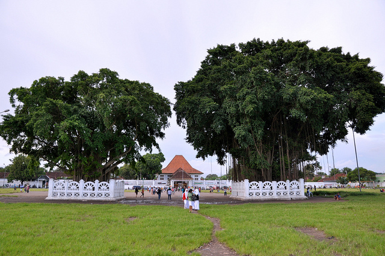

Jogjaeo
Hari ini mau jalan kemana nih
Yogyakarta
Sleman
Bantul
Kulon Progo
Kulon Progo
TEAM
Team kami merupakan mahasiswa teknologi informasi angkaran 2019. Tujuan kami membuat web ini karena banyak orang mengagumi akan keindahan alam Yogyakarta namun kurang mengenal tentang wisatanya yang begitu banyak dan masih asri sampai saat ini.
Enggal Mianita
Salsa Marlyana
Miftakhurrokhmah
Saran dan Masukan
Sebelumnya kami mengucapkan terimakasih atas masukan yang diberikan

Agrowisata Bhumi Merapi
Jl. Kaliurang KM. 20, Sawangan, Hargobingangun, Kecamatan Pakem, Kabupaten Sleman, Yogyakarta
Sumber foto:https://www.instagram.com/agrowisatabhumimerapi/?hl=id
Agrowisata Bhumi Merapi menjadi salah satu sajian destinasi wisata alam di Jogja yang bisa anda kunjungi ketika berlibur bersama keluarga. Menikmati libur akhir pekan dengan suasana alam yang menenangkan pastinya anda akan mendapatkan kualitas liburan yang di harapkan.
Blue Lagoon
Dusun Dalem, Widodomartani, Kecamatan Ngemplak, Kabupaten Sleman, Daerah Istimewa Yogyakarta
 Sumber foto:
Sumber foto:
Blue Lagoon Jogja adalah salah satu lokasi wisata yang sekarang banyak dikunjungi oleh wisatawan. Bisa dikatakan tempat ini tidak kalah dari blue lagoon yang ada di islandia. Oleh karena itu Anda bisa memilih tempat yang satu ini sebagai tujuan wisata bersama keluarga dengan nuansa alam yang indah.
Malioboro
Jl. Margo Mulyo, Ngupasan, Gondomanan, Kota Yogyakarta, DIY
Sumber foto:https://images.app.goo.gl/V5XEVg3EyfPB2DpC9
Jalan Malioboro adalah nama salah satu jalan dari tiga jalan di Kota Yogyakarta yang membentang dari Tugu Yogyakarta hingga ke perempatan Kantor Pos Yogyakarta. Secara keseluruhan terdiri dari Jalan Pangeran Mangkubumi, Jalan Malioboro dan Jalan Jend. A. Yani. Jalan ini merupakan poros Garis Imajiner Kraton Yogyakarta.
Alun-alun Kidul
Patehan, Kecamatan Kraton, Kota Yogyakarta, Daerah Istimewa Yogyakarta
 Sumber foto:https://www.nativeindonesia.com/alun-alun-kidul/
Alun-Alun Kidul Yogyakarta yang biasa disingkat Alkid atau dalam Bahasa Indonesia berarti Alun-alun Selatan merupakan wilayah bagian selatan dari Kraton Yogyakarta. Menurut sejarahnya Alun-alun Kidul dibuat untuk mengubah suasana bagian belakang keraton menjadi seperti bagian depan karena Gunung Merapi, Keraton Yogyakarta, dan laut Selatan Pulau Jawa jika ditarik dalam satu garis imajiner akan membentuk satu garis lurus.
Keraton Yogyakarta
Jl. Rotowijayan Blok No. 1, Panembahan, Kecamatan Kraton, Kota Yogyakarta, Daerah Istimewa Yogyakarta
 Sumber foto:
Sumber foto:
https://images.app.goo.gl/tc4mz8374FhxWbNR9
Keraton Yogyakarta menjadi salah satu ikon wisata bersejarah di Yogyakarta selain Candi Borobudur. Keraton yang merupakan istana kesultanan Ngayogyakarta Hadiningrat ini masih berfungsi sebagai tempat tinggal sultan. kompleks keraton kini sebagian beralih fungsi sebagai museum benda-benda koleksi milik kesultanan. Keraton Yogyakarta masih menjaga warisan budaya seperti kegiatan upacara adat, dan benda-benda kuno lainnya. Nilai-nilai filosofi dan mitologi masih melingkupi kehidupan di Keraton Yogyakarta.
Taman sari Yogyakarta
Patehan, Kraton, Yogyakarta City, Special Region of Yogyakarta 55133
Sumber foto:https://jenishotel.info/kampung-wisata-taman-sari-jogja
Taman Sari Jogja dibangun diatas lahan seluas 10 hektar lebih dengan memiliki 57 bangunan indah nan kokoh. Bangunan-bangunan tersebut meliputi: Kolam pemandian, Danau buatan beserta pulaunya, Lorong bawah tanah, Kanal air, Jembatan gantung, serta beberapa bangunan lainnya. Pembangunan Taman Sari Jogja ini dimulai setelah proses penandatanganan Perjanjian Giyanti pada tahun 1755. Dimana sebelumnya telah terjadi perpecahan di dalam keraton sendiri, yang mengakibatkan terbelahnya Mataram menjadi 2 bagian yakni Kesultanan Surakarta dan Kesultanan Yogyakarta.
Bukit Penguk Kediwung
Panguk Kediwung tepatnya berada di Dusun Kediwung, Desa Mangunan, Kecamatan Dlingo, Kabupaten Bantul, Daerah Istimewa Yogyakarta
Sumber foto:http://www.wisataoke.com/2019/06/tempat-wisata-alam-bukit-panguk.html
Hamparan bukit-bukit yang berwarna hijau serta sungai Oya yang mengalir diantara perbukitan yang ada, apalagi jika pagi hari akan nampak kabut lembut yang menutupi kawasan perbukitan tersebut. seakan berada di atas awan dengan udara yang cukup sejuk. Letaknya yang berada di ketinggian menawarkan spot untuk menikmati indahnya sunrise dan cantiknya sunset.
Hutan Pinus Pengger
Desa Terong, Kecamatan Dlingo, Kabupaten Bantul, Daerah Istimewa Yogyakarta. Lokasinya berada di bagian paling utara dari Kecamatan Dlingo
 Sumber foto:
Sumber foto:
https://www.kartanesia.com/wp-content/uploads/2019/04/Hutan-Pinus-Pengger.jpg
hutan pinus pengger jogja yang letaknya di dataran tinggi ini pun memiliki suasana yang sangat menyejukkan hati. Ditambah lagi dengan adanya aroma getah pinus yang menyapa wisatawan sehingga dapat menambah keasrian wisata ini. kamu akan langsung melihat lanscape bukit yang dimana kamu bisa memandang indahnya kota jogja dari atas sini.Suasana di tempat wisata bukit pengger jogja ini masih sangat asri, sehingga sangat cocok untuk dijadikan sebagai tempat refreshing dan sejenak menyingkir dari kebisingan kota.
Air Terjun Kedung Pedut
Desa Jatimulyo, Kecamatan Giri Mulyo, Kulon Progo, Yogyakarta
 Sumber foto:
Sumber foto:
Air Terjun Kedung Pedut merupakan salah satu wisata alam yang berada di Yogyakarta lebih tepatnya di daerah Kulon Progo. Untuk menuju ke Air Terjun Kedung Pedut ini bukan hal yang mudah, wisatawan harus menaiki gunung melewati jalur diatas perbukitan menoreh.
Waduk Sermo
Sremo Tengah, Hargowilis, Kokap, Kabupaten Kulon Progo, Daerah Istimewa Yogyakarta 55653
Sumber foto:https://jadwaltravel.com/tiket-masuk-waduk-sermo/
Waduk Sermo pada mulanya merupakan danau buatan yang digunakan sebagai cadangan air untuk pengairan sawah. Namun karena areanya yang luas dan hijau maka Waduk Sermo pun dibuka untuk umum dan dijadikan tempat wisata. Waduk Sermo bak Ranukumbolo yang dimiliki Kulon Progo. Tempat ini memiliki danau yang begitu jernih dengan warna kehijauan. Sekelilingnya dipenuhi dengan pepohonan yang rimbun dan begitu hujau. Ditambah lagi, rerumputan yang menutupi seluruh permukaan tanah membuat keindahan semakin bertambah. Pengunjung pun dapat berkemah di sekitar waduk. Di sini sudah disediakan tempat bagi siapapun yang akan berkemah di tepi danau. Serunya berkemah, pengunjung dapat menikmati pemandangan pagi yang sejuk. Di kala pagi, area waduk akan diselimuti oleh kabut putih. Terkesan mistis, namun penuh pesona keindahan. Kesegaran dan kesejukan udara akan menyambut pagi dengan lembut.
Heha Ocean View
Desa Girikarto, Kecamatan Panggang, Kabupaten Gunungkidul, Yogyakarta
Sumber foto:https://www.instagram.com/p/CLVnWBNAUgs/
HeHa Ocean View ini merupakan salah satu tempat wisata kekinian di Gunungkidul. Lokasinya ada di Bolang, Girikarto, Panggang, Gunungkidul. Tempat wisata yang satu ini masih satu manajemen dengan wisata HeHa Sky View. Meski memiliki konsep yang sama, bedanya HeHa Ocean view menawarkan pemandangan laut selatan yang indah. berlokasi tepat di tepi tebing, sehingga pengunjung bisa menikmati pemandangan laut lepas sambil menikmati makanan dan minuman yang tersedia.
Goa Jomblang
Desa Pacarejo, Kecamatan Semanu, Kabupaten Gunungkidul, Yogyakarta
 Sumber foto:
Sumber foto:
https://blog.misteraladin.com/intip-cahaya-dari-surga-di-gua-jomblang/
Gua Jomblang merupakan gua vertikal yang bertipe collapse doline. Gua ini terbentuk akibat proses geologi amblasnya tanah beserta vegetasi yang ada di atasnya ke dasar bumi yang terjadi ribuan tahun lalu. Runtuhan ini membentuk sinkhole atau sumuran yang dalam bahasa Jawa dikenal dengan istilah luweng. Itulah yang membuat unik karena di dalam gua terdapat luas mulut gua sekitar 50 meter ini sering disebut dengan nama Luweng Jomblang. Gua Jomblang terletak di Kabupaten Gunungkidul, DI Yogyakarta.